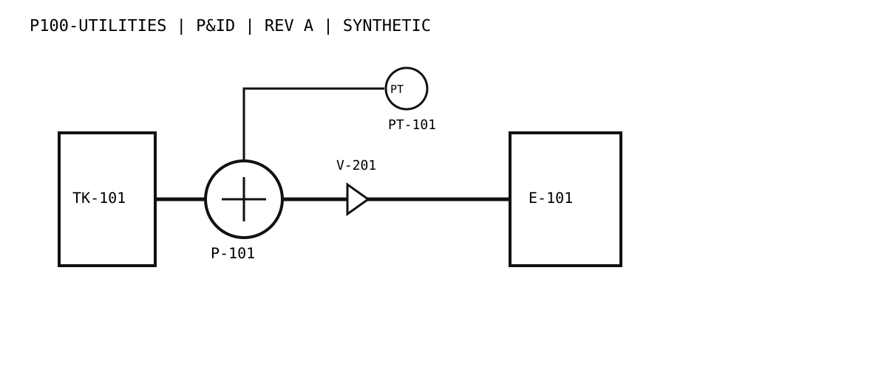

Graph entities
05
Typed entities in the synthetic revision demo
How do you ask a technical drawing a precise question and still know which revision, entity, and source region support the answer?
A small, testable service models synthetic P&ID sheets as connected engineering entities rather than a flat text corpus.
These two authored drawings are entirely synthetic. The comparison changes one instrument tag while preserving the example process path.

Identify equipment, lines, valves, instruments, and links while retaining document and revision metadata.
Run transparent checks over connections and flag dangling endpoints rather than smoothing them over.
Find added and removed entities, then answer narrow questions with traceable page-region evidence.
The current scorecard validates deterministic behavior and evidence structure on a deliberately small synthetic set.
The revision comparator checks both directions, so a deleted entity is not lost by considering only the newer drawing.
A dangling endpoint is exposed as a validation issue for inspection rather than being silently accepted as a valid path.
Extracted items retain source evidence. Narrow questions can cite the underlying entity and uncertain questions can abstain.
The current prototype uses a deterministic source-layer adapter over authored SVG metadata so the graph, comparison, rules, and API can be tested without a commercial OCR service or model key.
Typed extraction records connected into an engineering graph.
Set-based changes, including entity additions and deletions, with reproducible regression tests.
An OCR or multimodal adapter can be added later without replacing graph validation or evidence-aware API contracts.